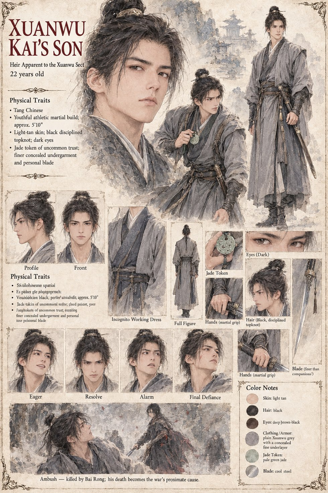

Xuanwu Kai's Son
Heir apparent of the Xuanwu Sect · 22 years old · three months from his succession
Twenty-two years old and three months from his formal succession as the sect's next Grandmaster, he insists on riding with the retrieval party himself rather than sending subordinates to claim what he has already decided will be his credit to take rather than his father's gift to inherit: the shepherd captured, the mystery solved, the succession secured on a victory earned and not a birthright accepted, the one thing in twenty-two years as his father's son he has never been allowed to say he did entirely alone. He is the fourth attacker in the clearing, younger than the others and better dressed beneath the plain Xuanwu grey, and he presses the attack longest and falls fastest, to a single strike.
Neither Bai Rong nor Shen Lie notices until much later that he carries a jade token no ordinary disciple would have been trusted to take off the sect's grounds; they leave without searching the bodies, in the greater urgency of Widow Bai's safety, and it costs more than almost any deliberate choice either man makes. Bai Rong stands over him a moment longer than he needs to, registering only that he is young. A grimmer, more thorough search party recovers the token, and his death becomes the proximate cause of a war that kills perhaps sixty people to avenge him. The sheet draws him athletic and martial in plain Xuanwu grey over a finer concealed undergarment, with a personal blade finer than his companions'; its other details are its own.